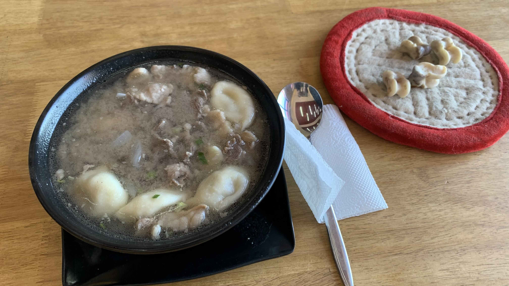
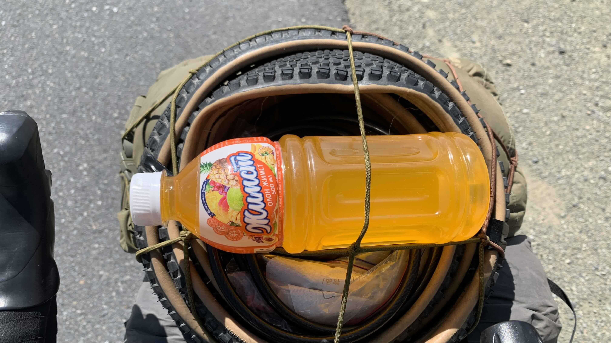
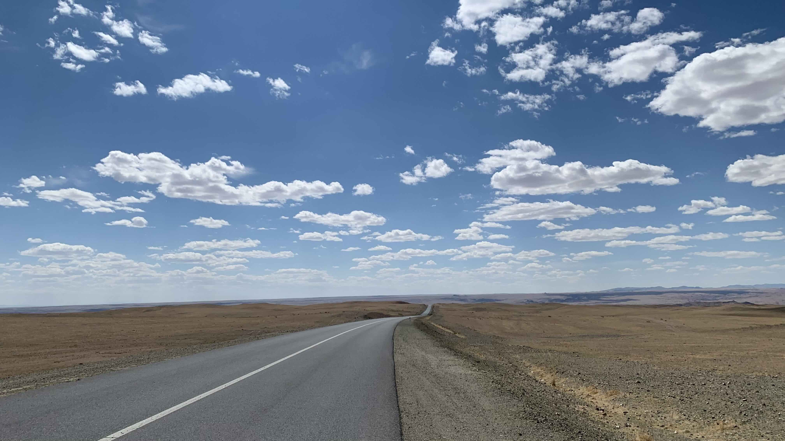
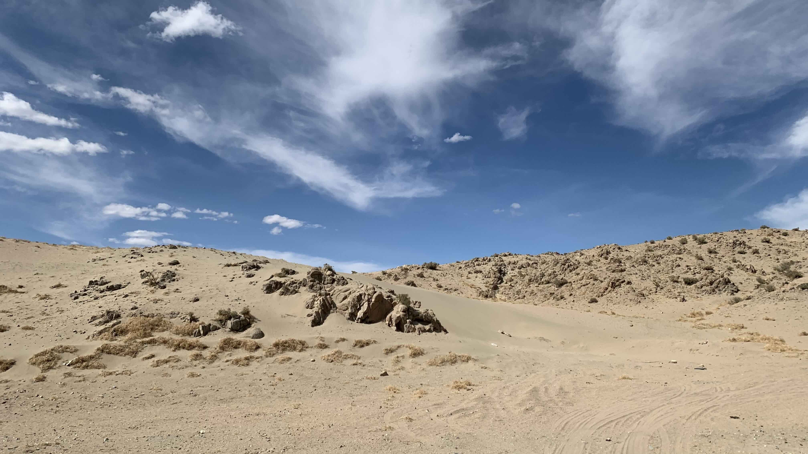
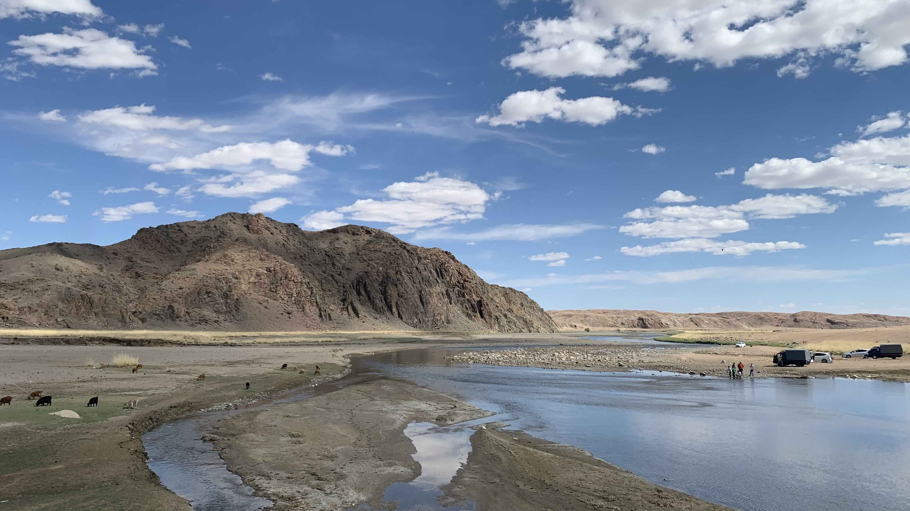
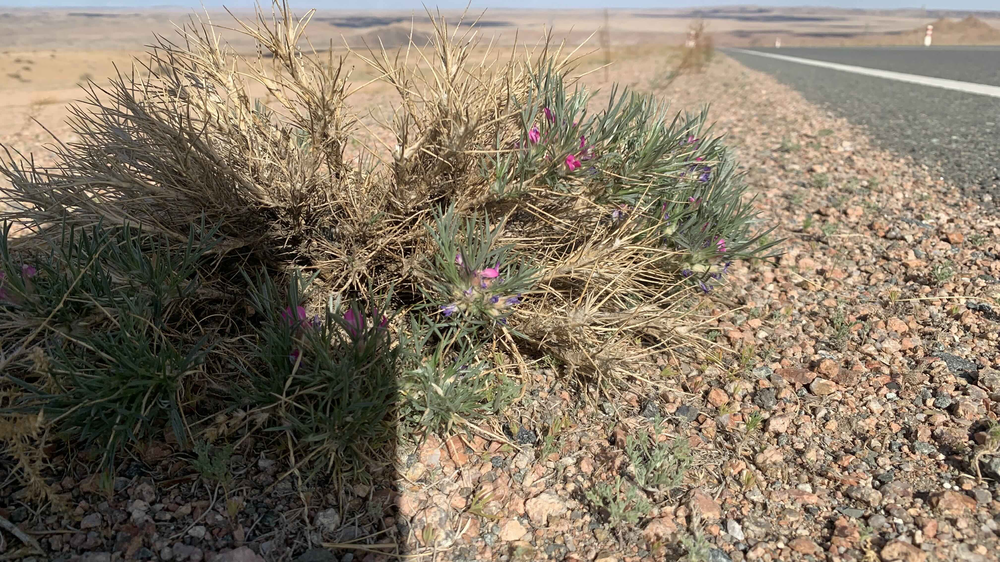
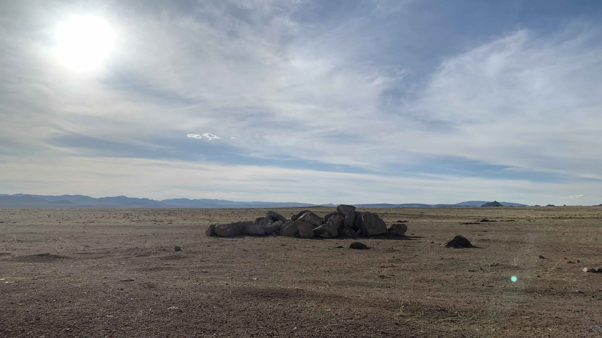
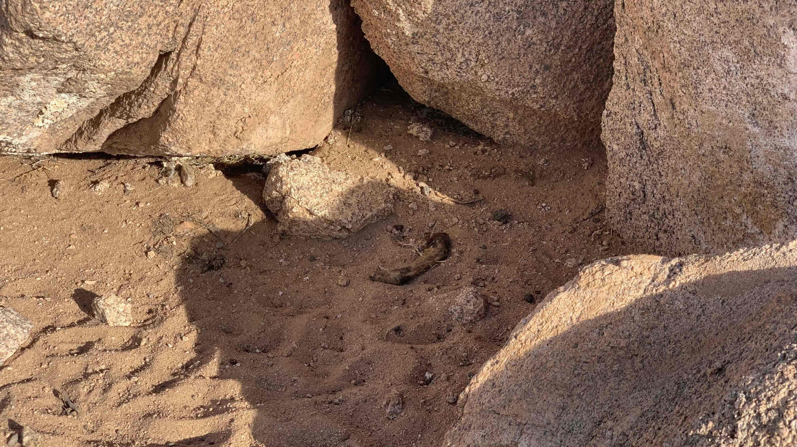
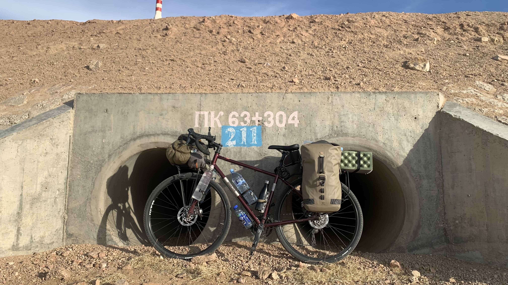

k-Day 100｜第100天
七點陸續聽到外面走動交談的聲音，睜開眼看到大家都起床工作了。但是床好舒服啊，再睡一下，八點再收拾吧⋯⋯
這樣睡到九點，我的身體很需要休息了。

第一百天，好不容易到了有網路的地方，就在這裡吃了飯上傳幾篇日誌吧，要不然大家可能以為我已消失在荒漠中。

出發不久就得到一瓶水果汁，是沒喝過的產品。

本日目標五點前抵達30公里外的河岸聚落，再看看當地有沒有訊號，如果沒有就繼續騎到太陽下山。

眼前的景色實在不像地球，如此壯觀的場面，怎麼會沒啥遊客來欣賞呢？

到了河邊，好多遊客在水邊玩。牽著車到陰影底下休息，手機果然還是沒有訊號，再騎個10公里吧。
剛剛一路下坡，現在要一次爬升450公尺，實在很不人道。蹲在地上休息拍花，經過的司機對我按了喇叭比讚。

爬了兩小時，終於抵達第一個坡頂，既然都快七點了，索性開始物色紮營地點。

雖然地勢開闊平坦，兩旁倒是有不少這樣的大石頭堆，究竟為什麼存在在此處就不得而知。

推著車走到一座長得不錯的石堆後方，可以確實地擋住人車是沒錯，但是地上一節斷掉的羊腿總是感覺不妙。再往前走到第二座石堆，旁邊是一具只剩皮骨的動物屍體，仍然不是好選擇。

前方有座涵洞，地勢平坦，然而此處面朝西北，且地面是水泥基座，無法插上營釘，晚上若是刮起大風，帳篷可能會晃動得相當厲害。
思考了一下，實在不想再轉移陣地，就決定睡在這裡了。搬了幾塊石頭壓住營釘，鑽進帳篷塞上耳塞。今天是出發後的第100天，距離口岸還有七百多公里。
今日花費： 午餐 200000元